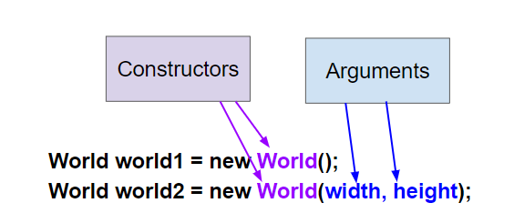

Part 1: Constructors and Constructor Calls
A Java class defines what objects of the class know, which are attributes, and what they can do, which are behaviors.
Each class has constructors (构造器), which are used to initialize the attributes in a newly created object.
Constructors have the same name as the class.
new ClassName(arguments)A new object is created with the new keyword followed by the class name, which is a call to the constructor.
The new object is saved in a variable of a reference type.
There can be more than one constructor defined in a class.
This is called overloading (重载) the constructor.
The World class has the 2 constructors shown below.

Two World constructors
The no-argument constructor World() has no arguments inside the parentheses following the name of the constructor.
It creates a graphical window with a default size of 640x480 pixels.
The second constructor, World(int width, int height), takes two integer arguments and initializes the World object’s width and height.
mchoice:: mcq_world_constructorWhich of these is valid syntax for creating and initializing a World object?
World w = null;World w = new World;World w = new World();World w = World();World w = new World(300,500);w, but it does not create or initialize a World object.() are required to call a constructor.new, the class name, and parentheses.new keyword is required.World object with size 300x500 pixels.Which of these is overloading the constructor?
Correct answer: D.
Overloading means that there is more than one constructor. The parameter lists must differ in number, order, or type of parameters.
The Turtle class also has multiple constructors, although it always requires a world as an argument in order to have a place to draw the turtle.
The default location for the turtle is right in the middle of the world.
There is another Turtle constructor that places the turtle at a certain (x,y) location in the world.
(x, y, world)Notice that the order of the arguments matters.
The Turtle constructor takes (x, y, world) as arguments in that order.
If you mix up the order of the arguments, it will cause an error, because the arguments will not be the data types that it expects.
This is one reason why programming languages have data types: to allow for error-checking.
mchoice:: const_turtleWhich of these is valid syntax for creating and initializing a Turtle object in world1?
Turtle t = Turtle(world1);Turtle t = new Turtle();Turtle t = new Turtle(world1, 100, 100);Turtle t = new Turtle(100, 100, world1);Correct answer: D. This creates a new Turtle object in the passed world at location (100,100).
activecode:: TurtleConstructorTestTry changing the code below to create a World object with 300x400 pixels.
Where is the turtle placed by default?
What arguments do you need to pass to the Turtle constructor to put the turtle at the top right corner?
Experiment and find out.
What happens if you mix up the order of the arguments?
TurtleConstructorTestimport java.awt.*;
import java.util.*;
public class TurtleConstructorTest
{
public static void main(String[] args)
{
// TODO: Change the World constructor to 300x400
World world1 = new World(300, 300);
// TODO: Change the Turtle constructor to put the turtle in the top right
// corner
Turtle t1 = new Turtle(world1);
t1.turnLeft();
world1.show(true);
}
}Runestone checks that the starter code has changed from the original.
The intended edits are:
World constructor to create a 300x400 worldTurtle constructor to put the turtle at the top right cornernew ClassName(arguments)World and Turtle constructor calls correctlyPart 2 continues with object references, signatures, parameters, and arguments.